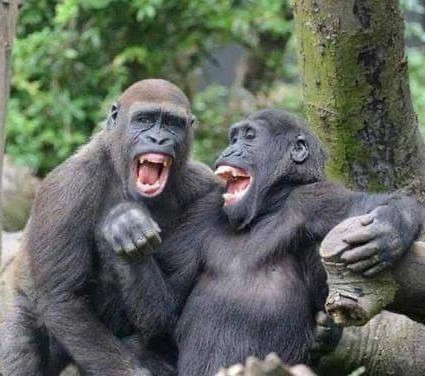
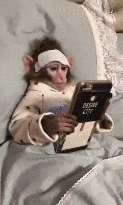

Алєговна була слішком опитна женщіна і хароший развєдчік, але скласти 2 + 2 в ситуації з Льоньою - Едіком не змогла …
Вони зайшли в першу попавшуся кавʼярню, Льоня замовив собі лате на безлактозному, Жанна - маккохве. І Льоня чи то Едік довго розповідав, як він любе Алєговну, але за душею в нього ні гроша, на відміну від його брата - близнюка Льоні…
Як оказалось, в Жашкові в 1976 году народились горіли - близнята. В девʼяностих почали мутити бізнес разом, але Едік всі гроші спускав на казіно, пока Льоня херачив і за грузчика, і за бугалтєра, і за діректора фірми.
В ітогє, брати посварились на довгих 10 років, за яких Льоня піднявся і купив маслозавод, а Едік голий - босий прийшов потім проситись до брата на роботу. І той взяв його до себе водієм (отой крузак трьохсотий звідти).
Гроші на подаркі Жанночці понабирав у крєдітах і тепер геть зовсім не знав шо йому робити.
Алєговна слухала мовчки.
З одної сторони вона хотіла вірити, що Едік її любе, а з іншої - а може він вопще альфонс, який поклав око на її двушку на Оболонському проспекті ? Хто зна, хто зна …
Він провів її до подʼєзда, вона глянула в його глибокі горилячі очі і сказала : «Дай мені трохи времʼя, Едік…»
*на фото Льоня і Едік, Жашків, 2010 рік.
*на фото Жанна Алєговна в діпресії